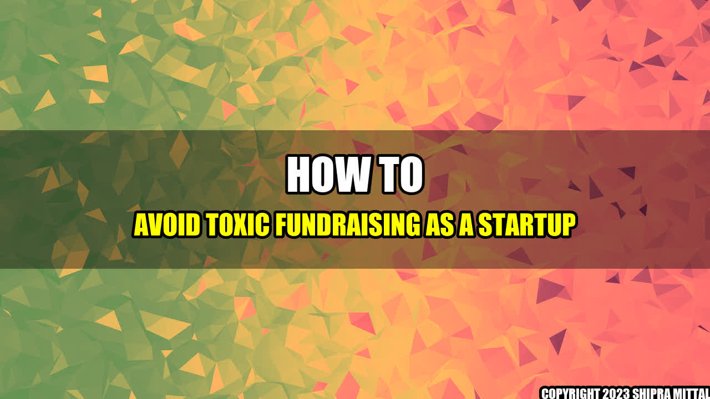

How to Avoid Toxic Fundraising as a Startup

When I started my first startup, I was so excited about the idea and the potential it had that I forgot to pay attention to the investors. I didn't realize how important it was to choose the right investors who align with my vision and values, instead of just accepting the money.
Later, I discovered how toxic fundraising practices can lead to lost control over your startup, wasted time and resources, and ultimately, failure.
Here are some concrete examples of toxic fundraising practices to avoid:
- Overvaluation: Accepting a higher valuation than is reasonable based on your current and expected revenue can lead to unrealistic expectations and pressure from the investors to deliver unrealistic results, which can result in you taking unnecessary risks and overlooking important factors that can insure the success of your business.
- Bad terms: Make sure you fully understand and agree with the terms of your agreement with your investors, including how much control you retain over the business, the transparency of financial reporting, and the timeline and conditions of the return of capital.
- Micromanagement:Some investors may try to overstep their boundaries and in the process, make irrational demands, which can shift the focus from the actual work and cause frustration, stress and a loss of trust.
"Bad investors can kill a good startup."
Here is my conclusion in three points:
- Be selective when choosing investors.
- Negotiate the terms and conditions of your partnership.
- Stay in control of your own business.
Reference
Based on the TechCrunch+ roundup: Deep tech tips for SaaS VCs, toxic fundraising, student visa startup options.
Further readings
- "The Fundraising Bible" by Maria Velikova
- "Venture Deals" by Brad Feld and Jason Mendelson
- "The Lean Startup" by Eric Ries
Hashtags
#startup #fundraising #toxic #investment
Category
Entrepreneurship
Author
Akash Mittal
Social
Share on Twitter Share on LinkedIn